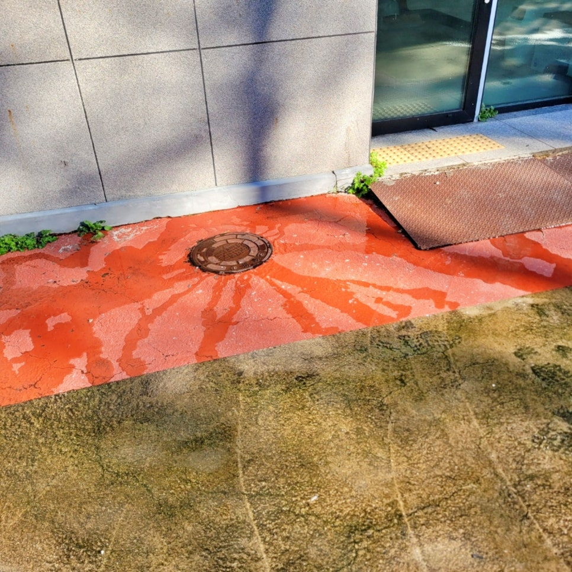
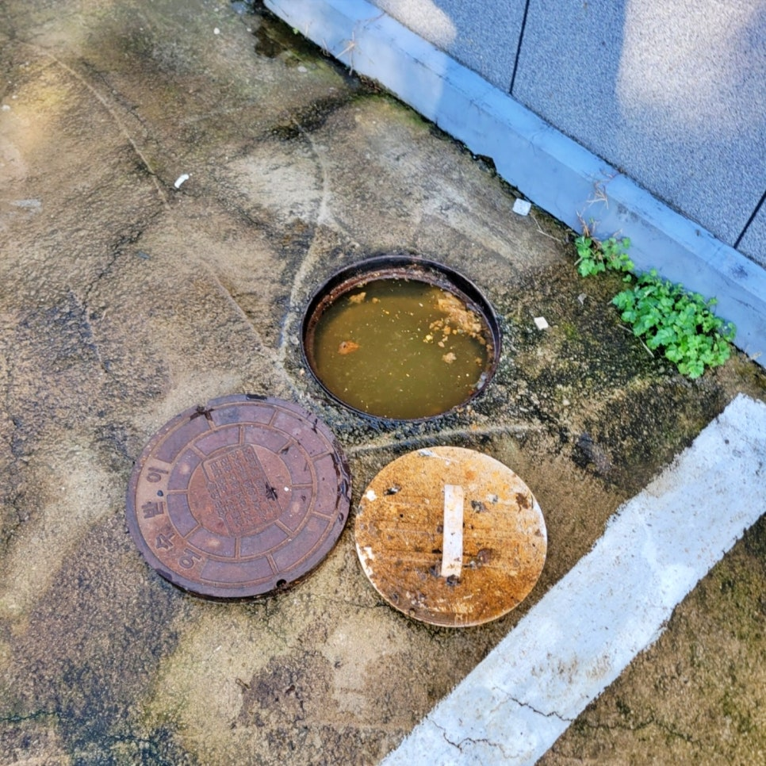
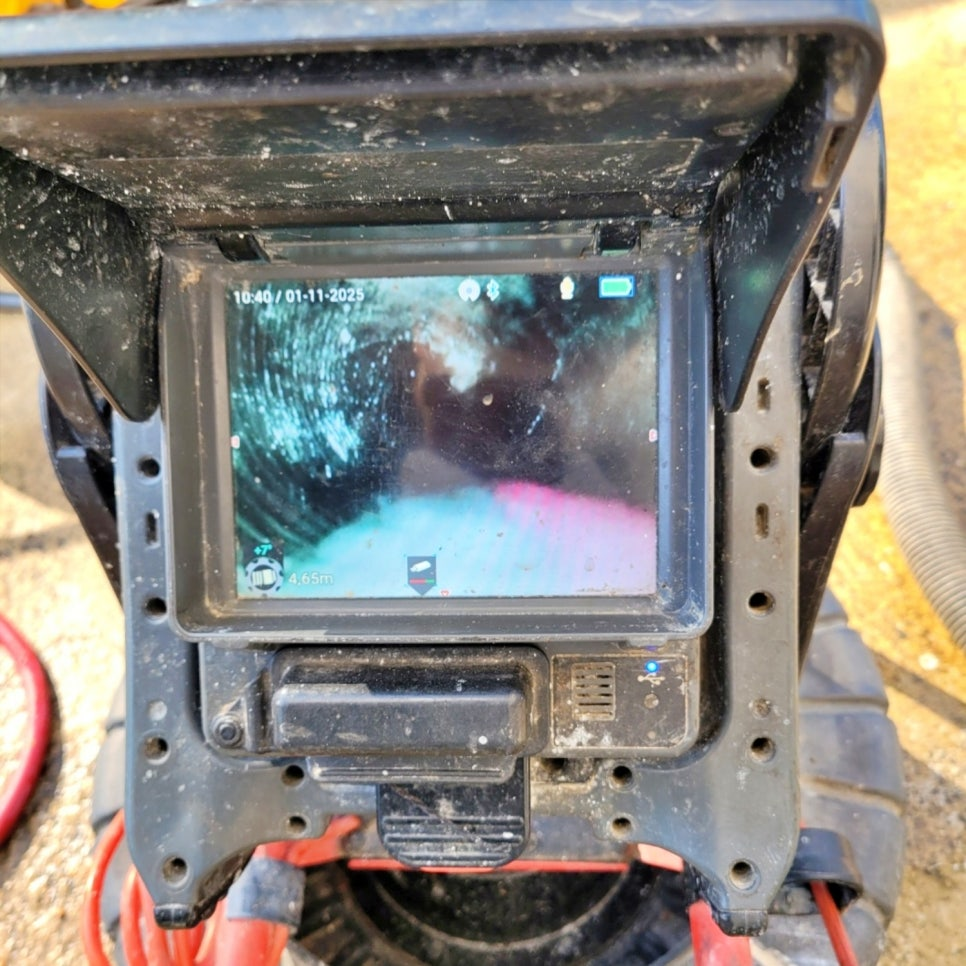
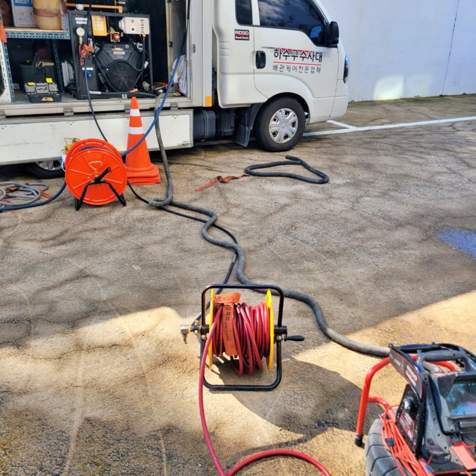
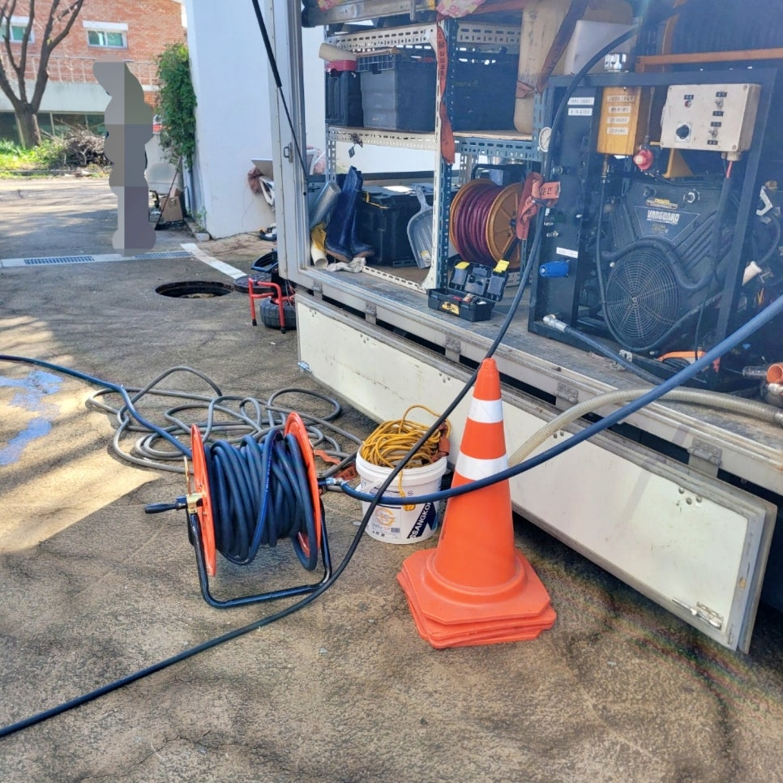
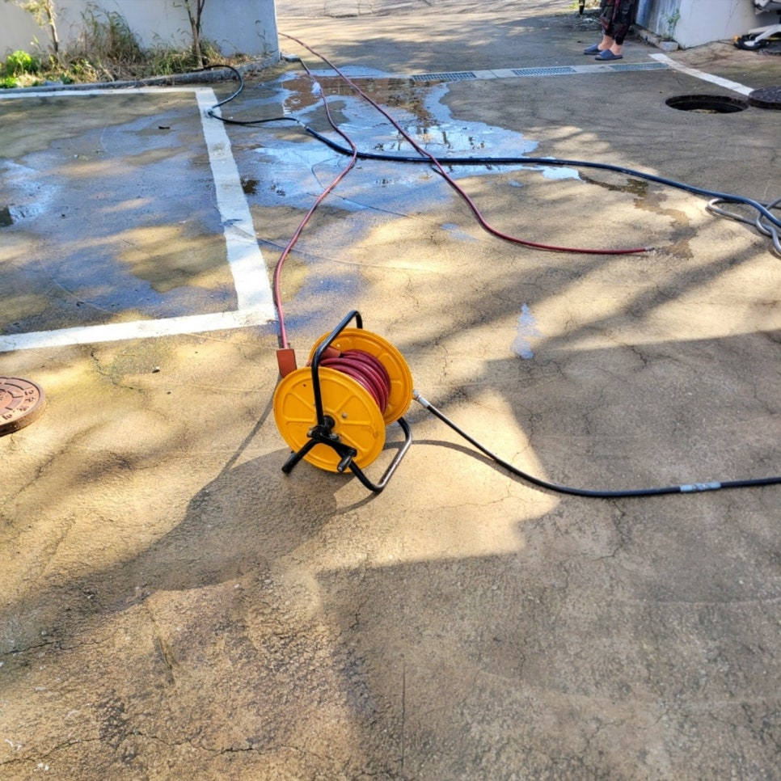

🏠 화성시 봉담 하수구막힘 맨홀역류 고압세척 청소 후기
화성 봉담 하수구막힘 전문 시공 후기

📋 작업 개요
- 위치: 화성 봉담, 봉담, 화성
- 서비스 유형: 하수구막힘, 배관막힘, 맨홀막힘, 역류해결, 뚫는업체, 배관청소, 고압세척
- 작업 일시: 2026. 2. 3. 17:49
- 업체명: 하수구수사대 (010-5615-2118)
🔍 문제 상황
화성시 봉담 하수구막힘 맨홀역류
고압세척 청소 작업으로 해결한
후기를 소개합니다.
환영합니다.
고압세척전문 하수구수사대 인사
드립니다.
오늘은
화성시 봉담 지역에서 발생한 심각한
하수구막힘과 맨홀역류 사례를 소개해
드릴 텐데요.
화성 봉담 맨홀역류 현장 이미지
건물 1층 화장실 바닥에서 물이
역류하는 동시에 외부 오수 맨홀에도
같은 현상이 나타난다는 긴급 연락을
받고 신속하게 현장에 도착해 보니
이미 화면과 같이 오수로 가득 차
넘치고 있었습니다.
과연 왜 이러한 현상이 나타났고
저희가 고압세척 작업으로 어떻게
해결했는지 그 과정을 지금부터
소개하겠습니다.
오늘의 포스팅 index

🔎 원인 분석
💡 전문가 진단: 화성시 봉담 하수구막힘 맨홀역류고압세척 청소 작업으로 해결한후기를 소개합니다.
1. 화성시 봉담 하수구막힘 원인은?
2. 맨홀역류 고압세척으로 해결하다
3. 오늘의 시공을 마치며
오수로 가득 찬 맨홀 내부 모습
먼저 맨홀 뚜껑을 열고 내부를
확인해 보니 짐작대로 심각한
막힘 현상이 발생해 있었는데요.
내시경 카메라로 점검하는 과정
정밀 진단을 위해 내시경 카메라를
통해 긴 하수관 내부를 탐색하는 동안,
놀랍게 오랜 시간 동안 쌓여온 두꺼운
기름때 덩어리가 하수관을 가득 메우고
있는 것을 발견했습니다.
원인은 바로 묵은 기름때였죠.
건물 관리자분께도 이 심각한 상황을
화면으로 보여드리고, 확실하게 이
문제를 해결할 수 있는 청소 방법으로
고압세척을 제안해 드렸는데요.
고압세척 작업 차량 모습
참고로
지금 화면에 보이는 하수구수사대의
작업 차량의 탑재된 고압세척 장비로

🔧 작업 과정
강력한 수압을 이용하여 하수관 안에
쌓인 막힘 물질을 제거해야 오랫동안
막힘 문제가 발생하지 않습니다.
화성시 봉담 하수구막힘 고압세척
청소는 먼저 오수 맨홀에서 최종
출수구 방향으로 노즐을 삽관하여
막힌 구간을 뚫기 시작했는데요.
약 30분간의 고압세척 작업을 통해
막힘 구간이 서서히 뚫리면서 맨홀
내부에 가득 차 있던 오수가 빠르게
빠져나기 시작했습니다.
하지만 여기서 멈추지 않고 반대편
건물 방향으로도 고압세척 청소를
진행했는데요. 예상대로 여기서도
다량의 기름때가 쏟아졌습니다.
고압세척 청소 작업 과정
작업을 시작한 지 2시간 동안 여러
차례 반복한 후, 다시 한번 내시경
장비로 하수관 내부를 점거했는데요.
깨끗해진 하수구 내부 모습
이제는 하수구 내벽에 쌓여있던
많던 기름때들이 깨끗하게 모두
제거되어 매끈한 상태를 확인할
수 있었습니다.
봉담읍 건물 맨홀역류 고압 청소
작업을 마친 후, 다시 건물 내부로
들어가 1층 화장실에서 많은 물을
붓는 배수 테스트를 진행해 막힘
없이 시원하게 배수되는 모습을
관계자분들과 함께 확인했습니다.
오늘 소개한
원인은 오랜 시간 쌓인 많은 기름
때문에 발생한 것이고요.
하수구 배관 청소 전문 업체인 저희
하수구수사대가 고압세척 작업으로
신속하게 해결해 드린 사례입니다.


✅ 작업 완료
지금 혹시
하수구막힘이나 맨홀역류 현상으로
불편함을 겪고 있다면 고민하지 마시고
하수구수사대를 불러 주십시오.
지금까지
"화성시 봉담 하수구막힘 맨홀역류
고압세척 청소 후기"를 정독해 주신
모든 분들께 감사드립니다.
#화성시봉담하수구막힘역류 #화성시봉담하수구업체 #화성시봉담하수구청소업체 화성시봉담읍하수구막힘전문 #화성시하수구청소업체 #화성배관청소업체추천 #봉담읍고압세척전문 #봉담하수구업체추천




⚠️ 하수구 배관 막힘 예방 및 관리 가이드
- ✅ 머리카락, 비닐, 물티슈 등 물에 분해되지 않는 이물질은 하수구 유입을 절대 금지해 주세요.
- ✅ 하수구 거름망을 씌우고 모여진 이물질은 주기적으로 쓰레기통에 바로 비워주셔야 합니다.
- ✅ 배관 노후가 심할 경우 이물질이 더 쉽게 걸리므로 주기적인 배관 세척(고압세척 등)을 권장합니다.
- ✅ 작업 후 1년 이내 재발 시 하수구수사대에서 무상 A/S 보증 서비스를 제공합니다.
💡 핵심 정리
- 확실한 장비 작업(내시경 점검 및 샤프트 스케일링)으로 원인을 뿌리 뽑습니다.
- 작업 후 1년 이내에 동일한 부위 재발 시 100% 무상 A/S 서비스를 보장합니다.
- 서울 · 경기 · 인천 전 지역에 24시간 언제든 긴급 출동할 수 있도록 항시 대기 중입니다.
❓ 자주 묻는 질문 (FAQ)
🚨 화성 봉담 하수구막힘 문제로 고민이신가요?
정확한 원인 진단과 확실한 시공으로 재발 없는 해결을 약속드립니다.
24시간 긴급 출동 | 서울 · 경기 · 인천 전지역 | 1년 내 재발 시 무상 A/S